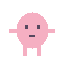
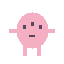
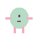

「できた！」が、プレゼント。
りんごも、お花も、お気に入りのおもちゃも。描いたモノや写真をあげると、この子らしい反応が返ってきます。
DRAW & GIVEAPP STOREで配信中！ おえかき × 育成
そのヘンテコな絵が、
世界でいちばん愛おしい子になる。
iPhone / iPad 対応 • 基本プレイ無料 • iOS / iPadOS 27以降
やっほー！
まるでも、しかくでも、なぞの生きものでも。
64×64のキャンバスに描いた絵が、
しゃべって、遊んで、いっしょに暮らすペットに。
上手に描くより、きみらしく描いてみて。

はじめまして。
ぼくも、おえかきから
うまれました。



今日のらくがきが、ごはんに。
何気ない毎日が、思い出に。
 実際のアプリ画面（静止画） / 看板ペット
実際のアプリ画面（静止画） / 看板ペットりんごも、お花も、お気に入りのおもちゃも。描いたモノや写真をあげると、この子らしい反応が返ってきます。
DRAW & GIVE食べたり、遊んだり、宝物を飾ったり。一緒に過ごす経験から、その子の好みや個性が少しずつ育ちます。
CARE & GROW川を渡るなら、どんな道具？ 64×64の絵で困りごとを解決する、時間制限のないおえかき冒険ごっこ。
DRAW & ADVENTURE絵の認識やペットとの会話は端末内で処理。画像を外部AIに送らずに、一緒の時間を育みます。
思いつくまま、自由に線を。
「うごかす！」を押したら、
きみのらくがきが、ぴょこん。
これはWebで遊べる、おえかきミニ体験です。
アプリのAI認識・育成機能とは異なります。
描いた絵は、このページの外には送信されません。
iOS / iPadOS 27以降のiPhone・iPadに対応しています。絵や写真の認識・ペットとの会話には、Apple Intelligence対応端末とApple Intelligenceの有効化、端末内モデルの準備が必要です。詳しい対応環境はApp Storeをご確認ください。
もちろん。「ぽこの絵を呼び出す」で下絵を読み込み、好きな色や形に描き足せます。アプリは絵の上手さを採点しません。まるだけでも、不思議な形でも、きみだけのペットを描けます。モノの絵をうまく認識できない時も、下書きを残してやり直せます。
ペットや贈り物の認識、会話の生成、保存は端末内で処理します。画像を外部AIへ送信することはありません。天気やアプリ内課金など、一部の機能は通信を利用します。
はい。App Storeからダウンロードできます。基本プレイ無料（一部アプリ内課金あり）です。このページのおえかきミニ体験も、引き続き無料で楽しめます。